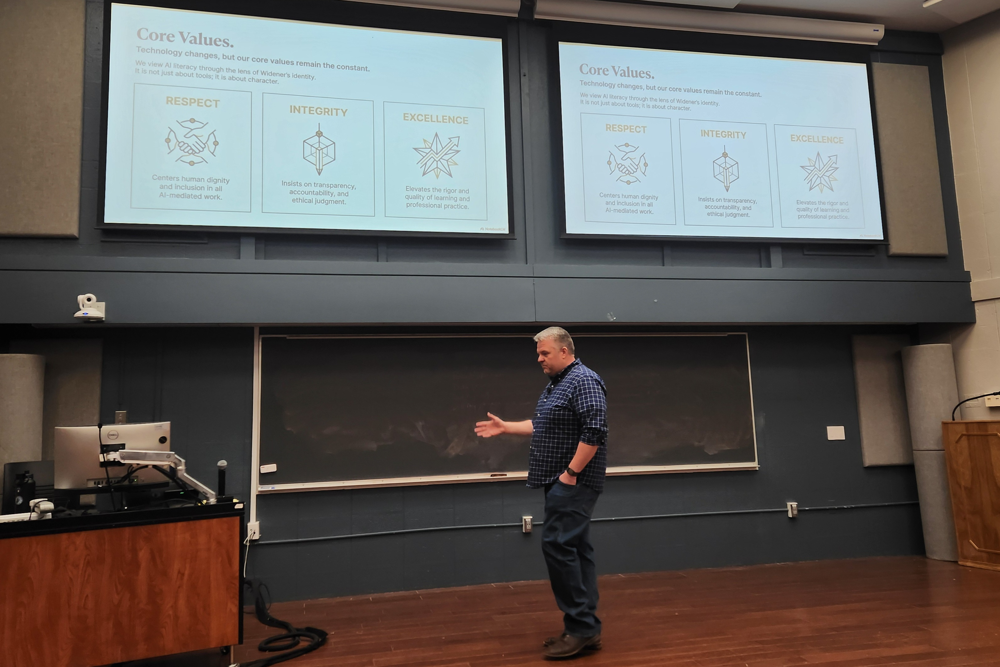

The AI Week Kickoff opened the week with a structured campus dialogue on Widener's proposed Critical AI Literacy Framework. Hosted by the LEAD-AI Council in Kapelski Learning Center Room 1, the session brought together faculty, staff, and students in a hybrid conversation designed to generate dialogue: to surface shared priorities, stress-test a working definition, and identify concrete next steps for embedding AI literacy across disciplines.
Facilitated by Tom Wilk, Chair of the LEAD-AI Council, the session used structured dialogue prompts to move quickly from framing to candid community conversation. Coffee, tea, and hot pretzels were provided; the session ran the full hour.
Simultaneously in the Kapelski lobby (11:30 AM–1:30 PM), the AI Club, Robotics Club, and CS Club hosted drop-in tabling with live demos and conversations about AI tools and student projects.
Widener's proposed framework articulates five core competencies expected of AI-literate graduates.
"AI literacy isn't some niche skill anymore… Students graduating today are expected to understand and work alongside AI the same way they're expected to communicate clearly."
"We need to work together to ensure that this is scaffolded throughout the curriculum in all units to better prepare our students."
"It was helpful to understand Widener's vision for AI literacy. Learning about AI at all levels—students, faculty, staff, and administration—is very important."
The majority of respondents rated the event 4–5 out of 5, with Strongly Agree on both perceived value and relevance to role.